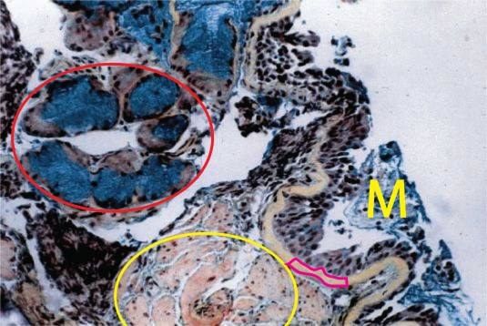

| Pulmonary Microscopic Pathology Image 3 | |
|  | |
| This is a pentachrome stained slide (originally 20x). The basement membrane (some outlined in magenta) is very thickened. There is massive smooth muscle hypertrophy (yellow ellipse). There is goblet-cell hyperplasia and a prominent submucous gland (red ellipse). There is mucous (M) in the airway lumen. | |
|
|